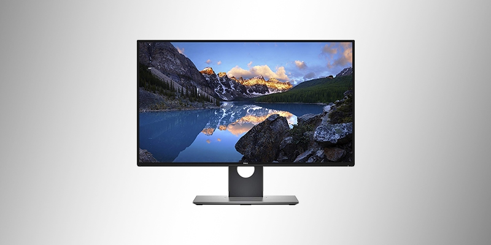

Um monitor é um dispositivo de saída do computador, cuja função é transmitir informação ao utilizador através da imagem. Porém são poucas as pessoas que se interessam por sua historia. Na década de 1950, a televisão ainda era novidade. Os computadores ocupavam vários metros quadrados, e eram utilizados cartões perfurados para armazenar, e papeis impressos para exibir os dados. Estes computadores eram usados em grandes empresas, pois era inviável e inútil alguém ter um destes em casa. Naquela época, era ficcional existirem computadores pessoais, e também que estes tivessem uma interface gráfica (termo desconhecido na época). A tecnologia começou a avançar cada vez mais, e com ajuda da tecnologia dos televisores, o monitor foi criado. Antes do monitor, foi desenvolvido o Tele impressor, que exibia as imagens em uma tela de televisão, evitando assim um monte de impressões. O monitor só exibia as imagens dos códigos. Utilizando os cabos dos vídeo-games, a maioria dos computadores dos anos 70 usava os televisores para visualizar os dados. Foi nesta época que surgiram os computadores pessoais. No ano de 1970 foi lançado o VT05 com um tele impressor embutido. Na década de 1980 foram feitas mais adaptações em relação aos televisores, e os monitores passaram a exibir cores. Não eram muito variadas, mas foi um avanço importante. Foi nesta época também que surgiram os monitores de cristal liquido, que quando foram criados, eram somente usados em notebooks, pois eram muito caros e com eficiência igual a de um monitor comum. Os monitores de tubo já perderam espaço no mercado, pois são grandes e consomem muita energia. Os monitores LCD evoluíram muito, melhorando a imagem e a economia. Atualmente são os mais vendidos.
Os monitores são classificados de acordo com a tecnologia de amostragem de vídeo utilizada na formação da imagem. Atualmente, essas tecnologias são três: CRT , LCD e plasma. À superfície do monitor sobre a qual se projecta a imagem chamamos tela, ecrã ou écran.
CRT (Cathodic Ray Tube), em inglês, sigla de (Tubo de raios catódicos) é o monitor "tradicional", em que a tela é repetidamente atingida por um feixe de elétrons, que atuam no material fosforescente que a reveste, assim formando as imagens. Este tipo de monitor tem como principais vantagens: longa vida útil; baixo custo de fabricação; grande banda dinâmica de cores e contrastes; e grande versatilidade (uma vez que pode funcionar em diversas resoluções, sem que ocorram grandes distorções na imagem). As maiores desvantagens deste tipo de monitor são: suas dimensões (um monitor CRT de 20 polegadas pode ter até 50 cm de profundidade e pesar mais de 20 kg); o consumo elevado de energia; seu efeito de cintilação (flicker); e a possibilidade de emitir radiação que está fora do espectro luminoso (raios x), danosa à saúde no caso de longos períodos de exposição. Este último problema é mais frequentemente constatado em monitores e televisores antigos e desregulados, já que atualmente a composição do vidro que reveste a tela dos monitores detém a emissão dessas radiações. Distorção geométrica.
LCD (Liquid Cristal Display), em inglês, sigla de (tela de cristal líquido) é um tipo mais moderno de monitor. Nele, a tela é composta por cristais que são polarizados para gerar as cores. Tem como vantagens: O baixo consumo de energia; As dimensões e peso reduzidas; A não-emissão de radiações nocivas; A capacidade de formar uma imagem praticamente perfeita, estável, sem cintilação, que cansa menos a visão - desde que esteja operando na resolução nativa; As maiores desvantagens são: o maior custo de fabricação (o que, porém, tenderá a impactar cada vez menos no custo final do produto, à medida que o mesmo se for popularizando); o fato de que, ao trabalhar em uma resolução diferente daquela para a qual foi projetado, o monitor LCD utiliza vários artifícios de composição de imagem que acabam degradando a qualidade final da mesma; e o "preto" que ele cria emite um pouco de luz, o que confere ao preto um aspecto acinzentado ou azulado, não apresentando desta forma um preto real similar aos oferecidos nos monitores CRTs; o contraste não é muito bom como nos monitores CRT ou de Plasma, assim a imagem fica com menos definição, este aspecto vem sendo atenuado com os novos painéis com iluminação por leds e a fidelidade de cores nos monitores que usam painéis do tipo TN (monitores comuns) são bem ruins, os monitores com painéis IPS, mais raros e bem mais caros, tem melhor fidelidade de cores, chegando mais próximo da qualidade de imagem dos CRTs; um fato não divulgado pelos fabricantes: se o cristal líquido da tela do monitor for danificado e ficar exposto ao ar, pode emitir alguns compostos tóxicos, tais como o óxido de zinco e o sulfeto de zinco; este será um problema quando alguns dos monitores fabricados hoje em dia chegarem ao fim de sua vida útil (estimada em 20 anos). ângulo de visão inferiores: Um monitor LCD, diferente de um monitor CRT, apresenta limitação com relação ao ângulo em que a imagem pode ser vista sem distorção. Isto era mais sensível tempos atrás quando os monitores LCDs eram de tecnologia passiva, mas atualmente apresentam valores melhores em torno de 160º. Apesar das desvantagens supra mencionadas, a venda de monitores e televisores LCD vem crescendo bastante.
